| 日付 | 2020年2月24日（月） |
|---|---|
| 山域 | 房総 |
| メンバー | 家族（妻、長女・8歳、長男・6歳） |
| 山行形態 | 子連れ日帰り |
| アクセス | 車 |
| ルート (Map) | 三石山駐車場 (8:56) - (10:09) 地蔵峠 - (11:36) 元清澄山 (12:24) - (14:22) 三石山駐車場 |
今週末の登山は、花粉と渋滞を避けて千葉県の山に向かう。
千葉県には清澄山と元清澄山という2つの山があり、
いずれも山のガイドブックに載っている。
清澄山は3年前に訪れた。今回はそこから少し離れた場所にある
元清澄山に登ってみることにする。
三石山観音寺の駐車場に車を停めさせていただく。標高240m。
山の中の割には駐車場がやたら広いのだが、そんなに参拝客が来るのだろうか？
ここへ来るまでの道中と駐車場で鹿を見かける。
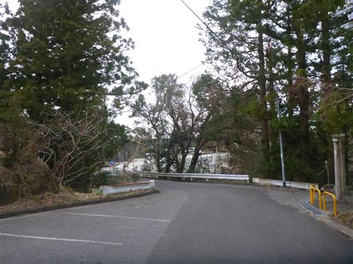
駐車場の近くにあった小さな神社。本殿の建物が一番小さい。
その背後は木がたくさん倒れていて荒れている。昨年の台風の影響だろう。
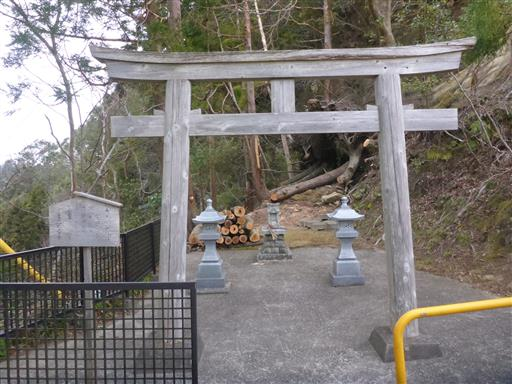
登山前に三石山観音寺に参拝する。
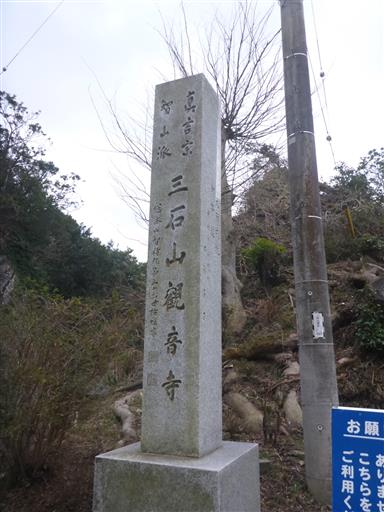
薬医門を潜る。
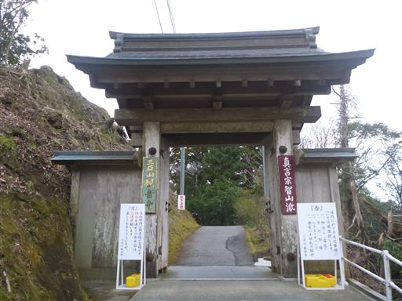
斜面は荒れていて壊れた建物の一部が散らばっている。
ここも台風で大きな被害を受けたようだ。
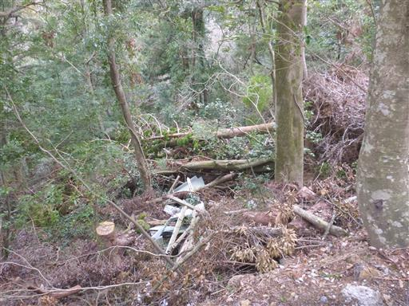
護摩堂と本坊。この寺の開門は6時で、もう寺院の人がいる。
住み込みか通いか分からないが、いずれにせよ早起きだ。
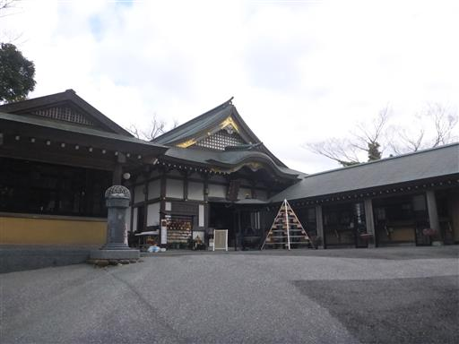
護摩堂の奥に本堂がある。建物が岩に半分埋まっている。
巨岩が3つ並んでいて、それが三石山の名の由来になっている。
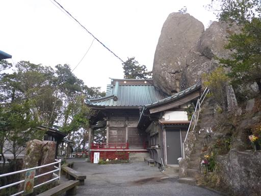
本堂の奥に、岩の上に至る階段が設けられている。
早速登ってみる。
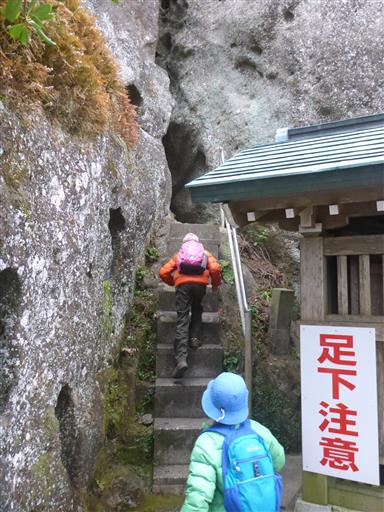
岩にはあちらこちらに穴があけられ、像が祀られている。
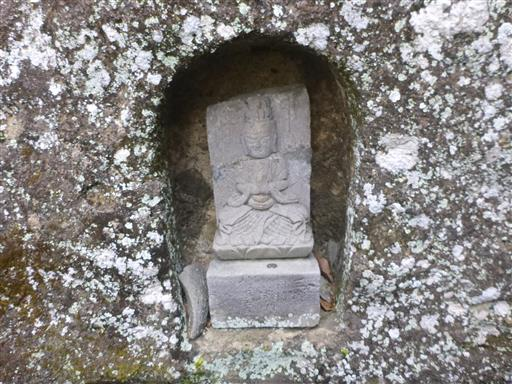
かなり細い岩の隙間を通る。
子供たちは楽しくてテンションが上がっている。
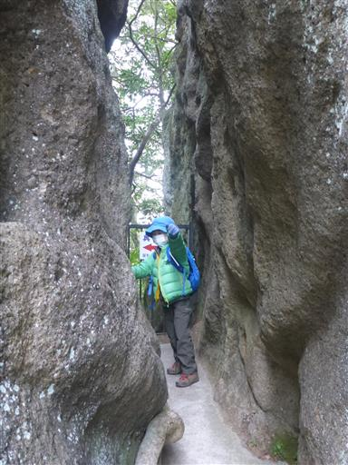
岩の上に辿り着く。縁結びにご利益があるらしく、多くのハンカチが結ばれている。
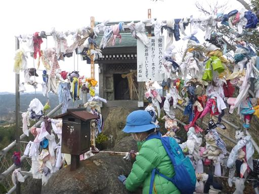
ここからは展望が広がる。
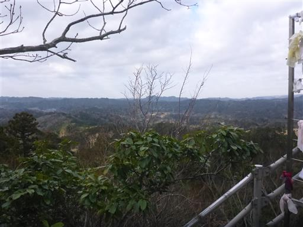
観音寺を後にし、次に三石山展望広場に行こうとしたが、
残念ながら倒木のため立入禁止になっている。
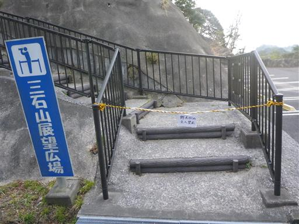
観音寺の向かいにある急な階段が元清澄山への登山口だ。
標識が無いのと、急すぎる階段から入るのを躊躇してしまう。
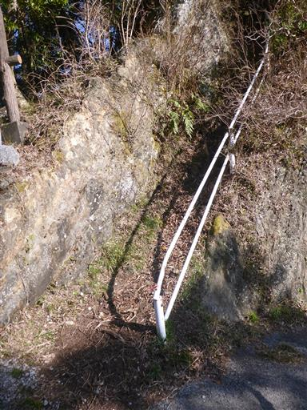
階段を登りきると、ここからは普通の登山道が始まる。
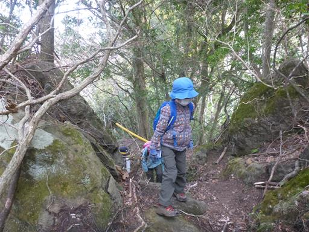
周囲は落葉樹、照葉樹、針葉樹が混ざった森だ。
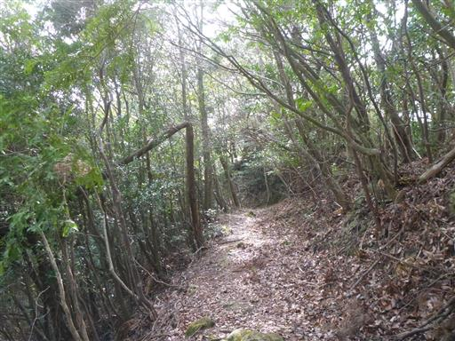
「元清澄山」が書かれた標識が見つかる。ようやく不安を払拭できた。
要所要所にではないが、所々に標識がある。
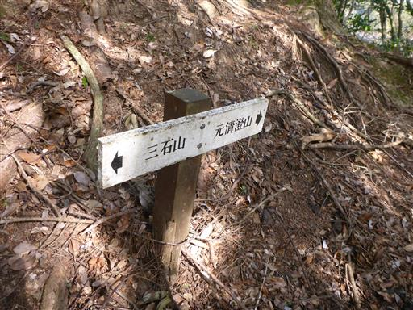
登山道は尾根筋に付けられているが、ほとんどのピークは巻いていて
ずっとアップダウンがない。体力的には楽な道だ。
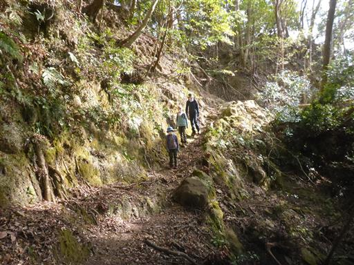
崩落地。木が転がり落ちている。
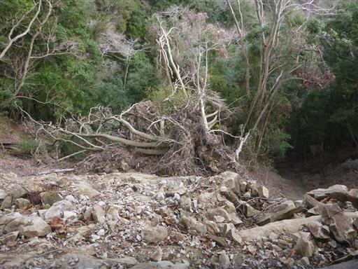
こちらの木も傾いていて、わずかな根のみで幹を支えている。
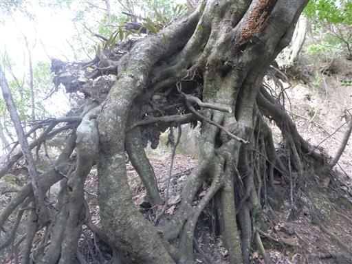
別の角度から。根の一部が地面に刺さっているので木はまだ生きている。
何とも不思議な光景だ。
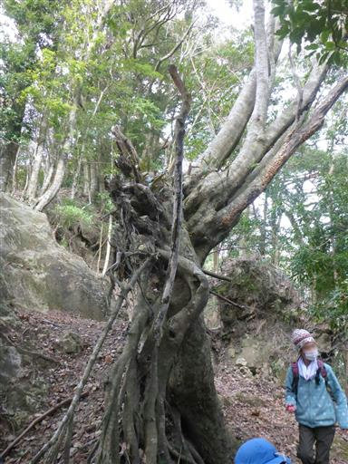
巨大なソーラーパネル施設。こんなに多くのソーラーパネルを初めて見た。
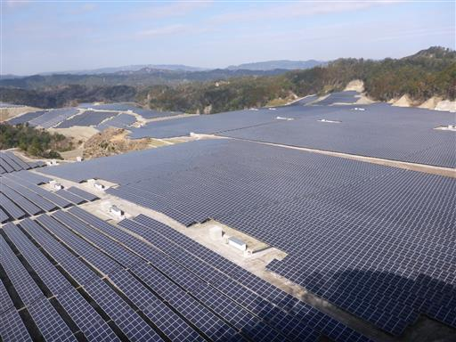
地蔵峠に到着。
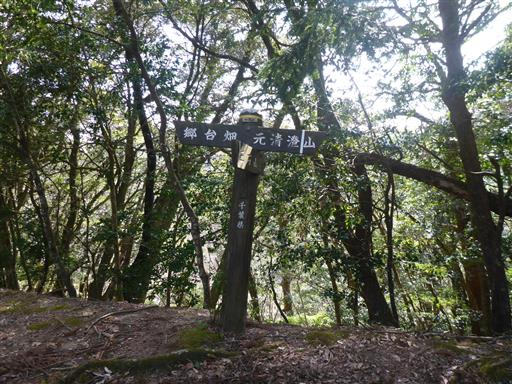
分岐点から先は東京大学の敷地で立ち入りが禁止されている。
清澄山に登った時もこの注意書きがあった。
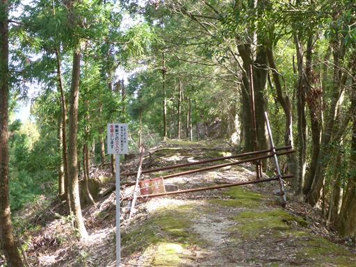
尾根が細くなっているところは、両側に苔が生えている。
なぜこういう場所だけ苔が多いのか謎だ。
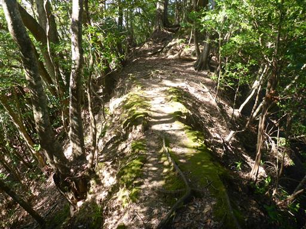
ところどころで植林地帯があるが、あまり多くない。
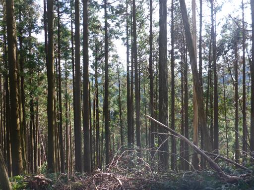
ほとんどは自然林。モミの木だろうか？
大きな木もところどころで見られる。
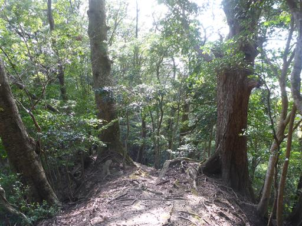
展望は全く広がらないが、明るい尾根道が続く。
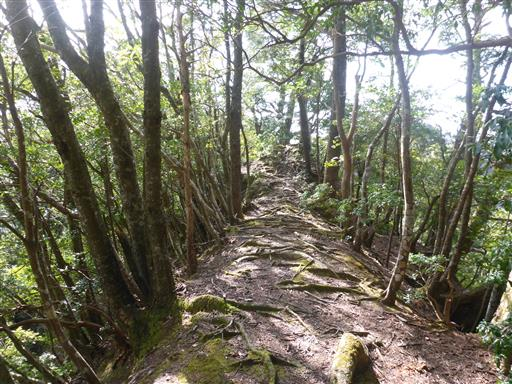
小さな岩場。アップダウンがほとんどない登山道なので、
こういう岩場があると少し変化が出る。
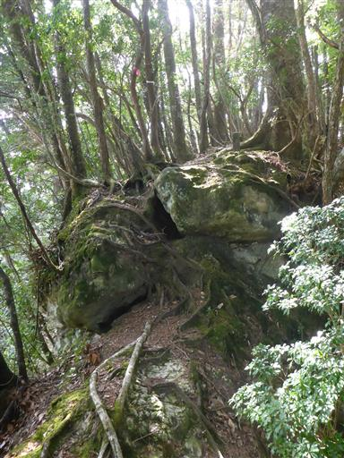
なかなか山頂に付かない。地図をほとんど見ずに歩いてきたので、
どこかで道を間違えたかと不安になり、少し周囲をうろうろする。
千葉の山は特徴のない山が並んでいるため、目的地が分かりづらい。
しばらく歩いてようやく標識を見つけて一安心。
そろそろ山頂だと思っていたが、まだここから0.7kmもある。
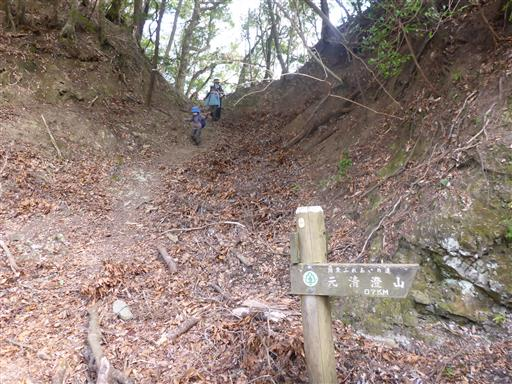
少しの間、古い林道を歩く。
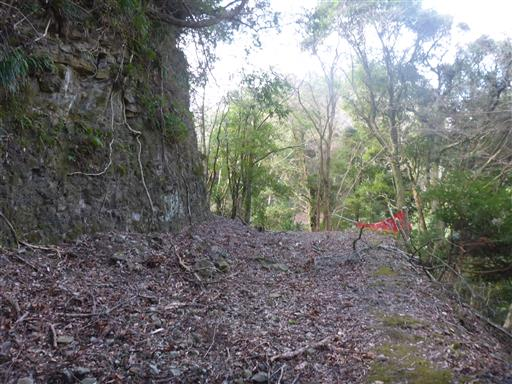
林道から再び登山道に入る。ここから急斜面の登山道になる。
本日初めての登りらしい登りだ。
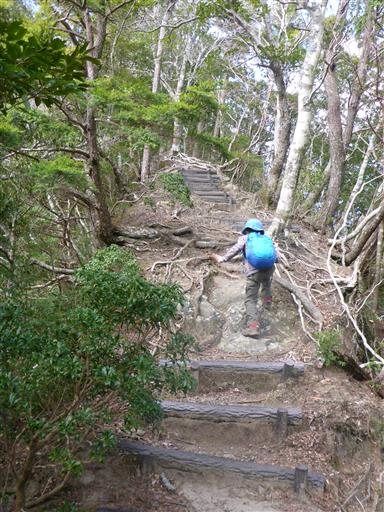
登山道が崩落して、階段がひっくり返っている。
ここも台風の影響だろうか？
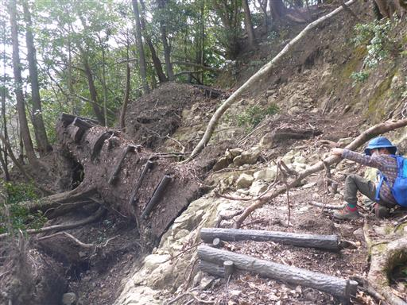
倒木を乗り越える。
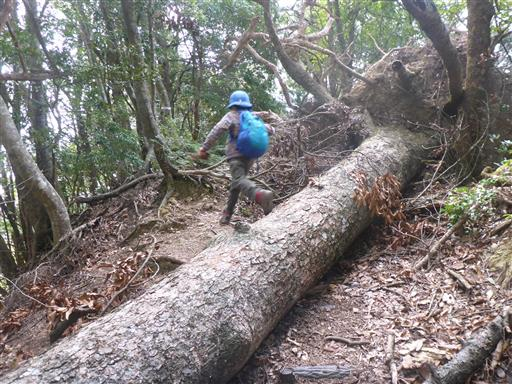
こちらは倒木の下を潜る。スペースが小さく大人には結構つらい。
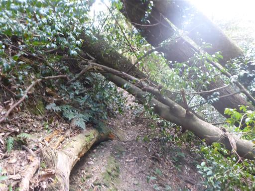
行程が長く、子供たちは文句だらけになってくる。
今日は軽い山だと最初に言っておいたのが良くなかったようだ。
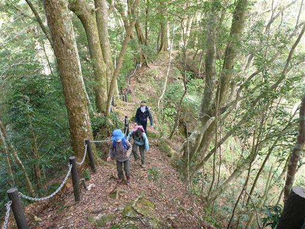
ようやく元清澄山に到着する。標高344m。
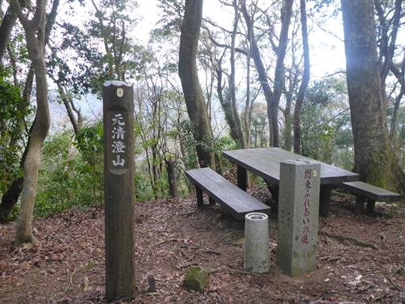
山頂にあるテーブルと椅子。ここで昼食をとる。
山頂は無人で、登りの途中で一人とすれ違っただけの静かな静かな山だ。
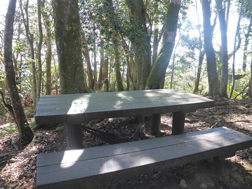
椿の花が咲いている。山頂は樹林に囲まれ展望は無い。
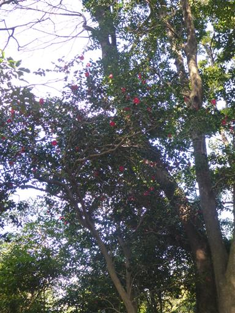
下山途中、この場所で息子が滑落。
棒を振り回して遊んでいたら、斜面に棒がぶつかってバランスを崩したらしい。
まだまだ危なっかしい。
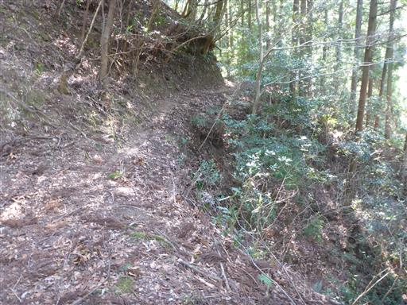
階段が土に埋もれたこの斜面で今度は娘がスリップ。
最後にトラブルがあったが無事下山する。
元清澄山は地味な山だったが、起伏の少ない樹林帯の中を静かに歩ける良い山だった。
一方、展望が良いポイントがほとんどなかったのが残念だった。
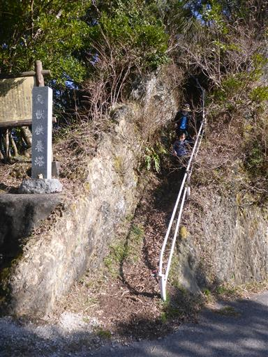